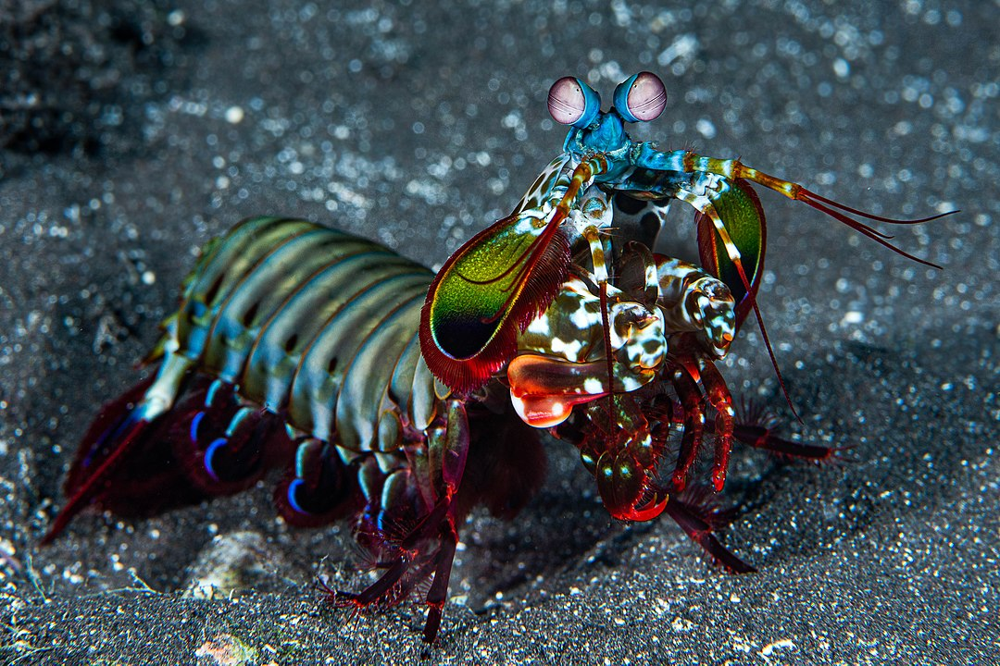
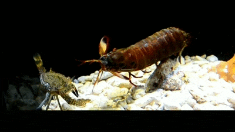
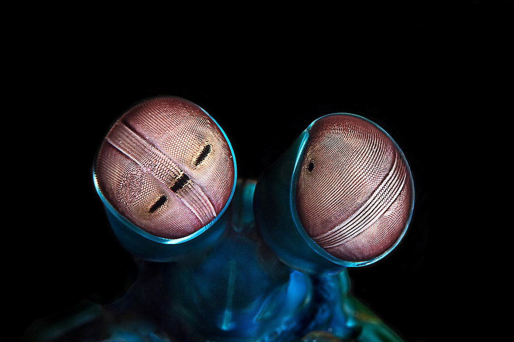

Fatos sobre o Stomatopoda

Odontodactylus scyllarus
| Classificação científica: | |
|---|---|
| Reino: | Animalia |
| Filo: | Arthropoda |
| Subfilo: | Crustacea |
| Classe: | Malacostraca |
| Subclasse: | Hoplocarida |
| Ordem: | Stomatopoda Latreille, 1817 |
Um super predador
Os estomatópodes são predadores ativos que caçam presas com o auxílio de um sentido de visão muito apurado e capaz de interpretar polarização no espectro ultravioleta e infravermelho.
Com um super soco
São capazes de desferir um dos mais rápidos e violentos golpes do reino animal, um soco que pode apresentar a velocidade de um tiro calibre .22 (equivalente a 720 km/h) e uma pressão de impacto de 600 N/cm².
E uma super visão
O sistema de visão dos estomatópodes possui doze cones sensíveis à luz e outros quatro que filtram a luz (16 cones no total), o que lhes permite ver cores polarizadas e imagens multiespectrais. Como cada cone pode ver cerca de 100 cores, os estomatópodes são capazes de ver 1024 cores, ou seja, 1 septilhão de cores. Em comparação, o olho humano vê 106 cores, ou seja, 1 milhão de cores apenas. A visão dos estomatópodes é sensível à luz ultravioleta, mas ainda é desconhecido se ela pode distinguir a luz infravermelha.
Referências bibliográficas:
- https://pt.wikipedia.org/wiki/Stomatopoda
- https://pt.wikipedia.org/wiki/Ficheiro:Odontodactylus_scyllarus1.jpg
- https://commons.wikimedia.org/wiki/File:Odontodactylus_scyllarus_eyes.jpg
- https://neptunesnecklace.files.wordpress.com/2013/08/spearer-in-action.jpg
- https://en.wikipedia.org/wiki/Odontodactylus_scyllarus#/media/File:Odontodactylus_scyllarus_R%C3%A9union.jpg
- https://jezzyjane.tumblr.com/post/97028441231/four-stage-implosion-punch-rather-than-the
{kind=link}
{kind=link}
{kind=link}
{kind=link}